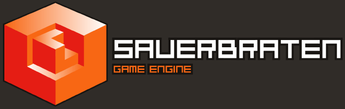

Welcome to the wiki for the Cube / Sauerbraten (Cube 2) / Eisenstern engines and game projects.

==
Main documentation
is
HERE. This wiki complements the main documentation, but eventually may take it over. Unless otherwise noted, anything in this wiki refers to Cube 2 / Sauerbraten first and foremost.
The sauerbraten wiki guidelines can be found
here.
Sections
Sauerbraten - The Game
Sauerbraten - The Editor
- Editing guide: itching to create? follow these steps.
- Coop Edit Guide: creating with others can be the most rewarding... but you need to follow certain guidelines.
- scripting guide: a view at the possibilites of scripting, with examples.
Sauerbraten - The Engine
The Sauerbraten game is freeware, you may freely distribute the Sauerbraten archive/installer unmodified on any media. You may re-compress using different archival formats suitable for your OS (i.e. zip/tgz/rpm/deb/dmg), any changes beyond that require my explicit permission.
You may play Sauerbraten for any purpose as long as you don't blame me for any damages incurred.
If you want to produce new content with the sauerbraten engine, you have to be aware that the source code may be Open Source, but the game and the media it consist of have their individual licenses and copyrights. This means that you have roughly 3 options:
- You may produce new content for the sauerbraten game, for example as a "custom map" (.ogz/.cfg/textures etc). Contributing to the original game is most welcome, and the most productive way of working with sauerbraten.
- If you want to create your own gameplay beyond what you can do with a map, the best way to do this is as a "mod" (same as above, but with new executable that incorporates your gameplay), that requires an existing install of sauerbraten, and installs only the new files you created in parallel to the existing files.
- If you insist on making a standalone game based on sauerbraten, do realize that only the sourcecode is yours to use freely (if you abide by the ZLIB license, see below), not the media. You CANNOT simply redistribute the entire sauerbraten package with your modified files, as the majority of game media is not yours to use freely (it is made by many authors with a variety of licences and copyright restrictions). Unless you have explicit permission from the authors, or the readme says explicitly "may be used for any purpose" or similar language, it will be illegal to include in your standalone game based on the sauerbraten engine (you may not assume that just because a file has no explicit license, that it is free of copyright). Therefore, if you wish to produce a standalone game, be prepared to make many of the maps, models, textures, sounds etc from scratch yourself.
In this sense sauerbraten is similar to games like Quake (its code is Open Source, but its media is not), it is a game that is meant to be added to, not copied and used as a template. Sauerbraten is not meant to be a quick game creation kit, it is a game.
If you wish to use the Sauerbraten source code (ZLIB license) in any way, read the src/readme_source.txt file carefully.